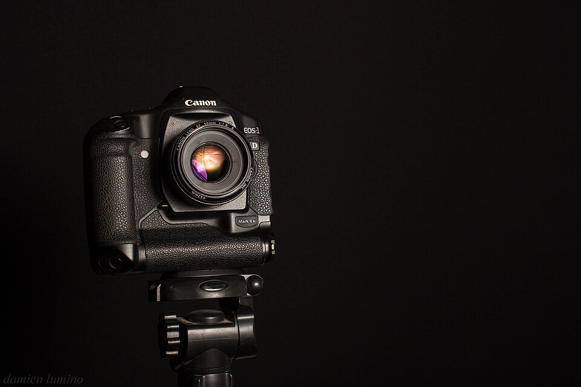

EOS-1D Mark II N使用820万有效像素CMOS图像感应器，8.5张秒连拍的超高速度与优异的影像质量，充分满足了从事新闻、体育摄影的专业摄影师的需求，实现了将速度与画质完美融合的梦想。
机子还算不错
优点很多
太重了
11年7600入的二手，当时喜欢的不得了，平时舍不得用，现在入了小马四，也就不像原来那样供着了，拿出来用的反而多了。个人感觉这台机子充分体现了1系记者机的特点，优点和缺点都很鲜明。但总体来说优点大于缺点，现在入手性价比也非常高，适合打鸟入门，比7d和xxd都强多了
1.对焦快，推大白嗖嗖的，虽然有45点对焦，但我最主要用中间的。偶尔抓飞鸟时会45点全开，对的非常快。 2.快门声音脆，这点我认为比小马四都好听 3.色彩好，个人非常喜欢，白平衡准。低感画质不错，高感400以下没问题，800以上慎用 4.算优点也算缺点，因为像素只有820碗，所以raw格式文件不大，节省存储卡 5.电池耐用，即使是一百多元的副电，连拍2000张无压力
1.重！这个拿的时间短显不出来，拿久了就感觉出来了，特别是手端着等鸟的时候 2.像素，820万对于个人来说，拍人像、风景一般也够用了，但对于打鸟一般后期都要裁剪，就显得有点少了 3.与后面出的机器相比，没有对焦微调功能，所以对于跑焦的镜头就麻烦一些 4.没有自动除尘，吸灰，后期每张处理非常麻烦 5,。写卡稍有点慢。同样的400X卡，放在小马四上不需要等，在这上面拍22张要等一会
对焦好，出片好。
同上
重，iso800上差
拿现在的眼光看，还是非常好的机子，目前性价比一流。
出片扎实，这个无数人都说了，细腻，信噪比极低，1系的做工和对焦，连拍，精度，追焦能力，都是其他系列无法比的，就是放在现在，兔妞的对焦也是超出7D不少，用过的就知道，在大光圈镜头下，比5系靠谱太多。快门声音满好听的，金属味很足，耐用，相当耐用！！ 电池非常耐用。
1. 重，这个不说了，1系不可能轻的。 2. 操作 不方便，基本是组合键，看个照片也得组合键。 3.色彩有些淡，可能是优点也可能是缺点。 4.像素才800W，这个是致命的把，现在相机动不动2000W以上，800确实有点寒酸，不过我觉得够用。
成像厚实，个人喜好。 对焦好。低感细腻。
同上。二手便宜。
800以上差点。重！
几年前用了好一阵干活的机器。当年真是快准狠。现在单位都报废了，但是依然好用，经常还拿出来发挥余热。 第一个快门是14.7W次挂的，现在换下来的大约不到11W，依旧稳定。耐用是必须的。
挺有所谓的胶片味道的，对焦快。像素十分够了。
操作有点别扭。回放、选择、调模式都要组合键操作，此后从1D3开始都改良了。 屏幕太烂，看起来没啥信心，但导入电脑里看看都还成。
结实，对焦精准，快速有力。 出片色彩好喜欢直出。
快速耐用，胶片厚实的味道。
重。高感差但实用，低感棒。
经典的机器，现在也够用，二手性价比极高
一流的做工和手感，胶片味啊有木有，850w用小痰盂出片放大100%还超有质感
电池不是锂电，这也不全是缺点，如果你到极冷的地方拍照你就恨不得自己的电池是镍芯电池
够快够结实成像风格个人喜欢！
对焦好，专业级
高感差
比想象中好太多了，小預算體驗一下1系的最好選擇。
對焦速度比5D快太多了，又准。 連拍速度和聲音都很有快感。 屏幕比小兔子和五弟都大。 相反，我沒覺得操作有多麻煩，反而覺得很順手。
不是全幅 電池不是鋰電 高感差一點，但是比5D強。1600勉強用，800以內沒問題。